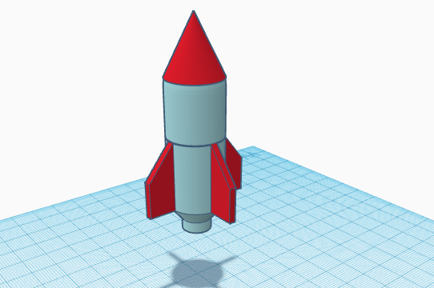
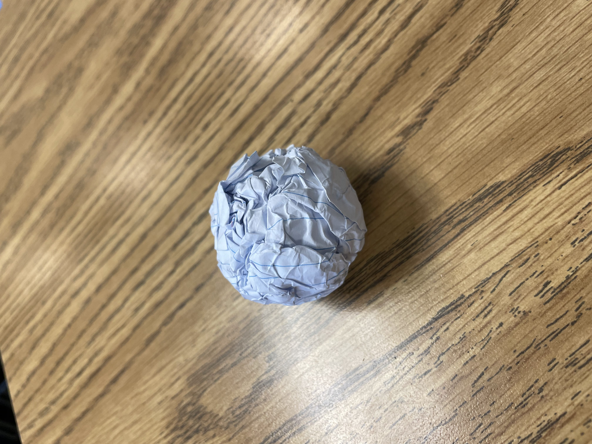
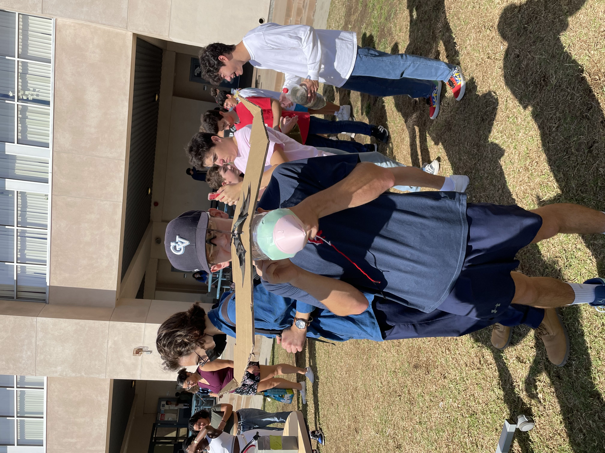
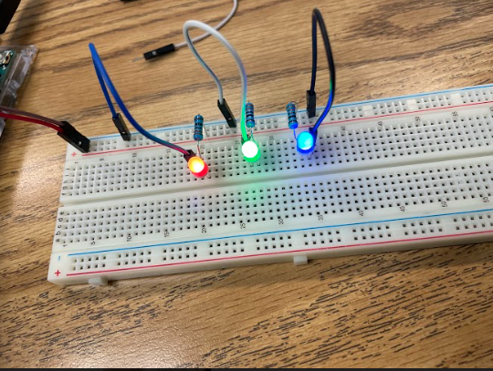
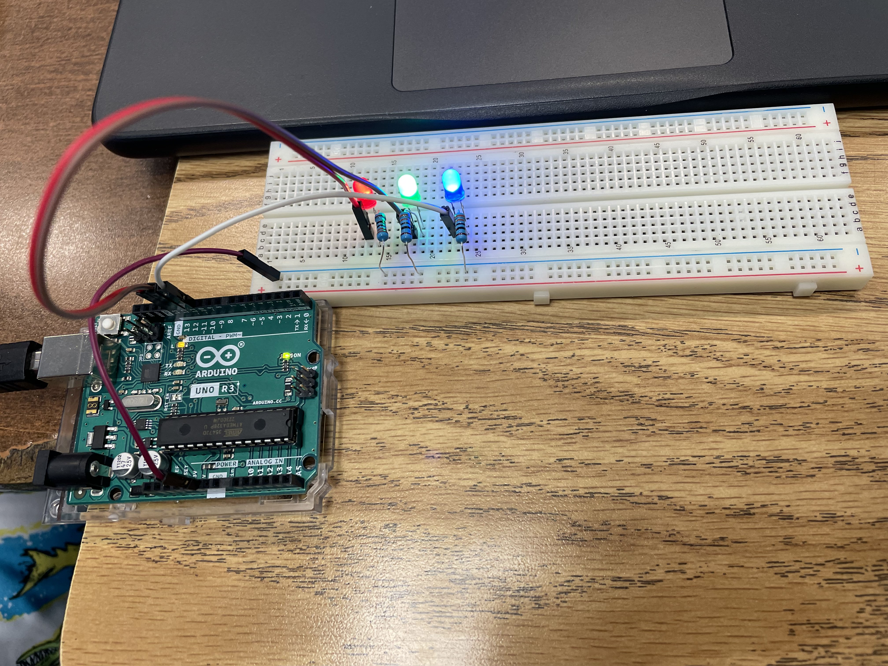

HELLO
Week 1, 9/2/22, We went over the syllabus and how the engineering class will work.
Week 2, 9/9/22, We worked on our project and our second challenge.
The project was making a machine to pop the baloon. We will be using different mechanisms including a pulley, lever, and a wheel and axle.Second challenge was to create a 3D object in TikerCAD that looks like the object in real life. I made a computer mouse, and it was pretty challenging to make the curves.
Here is a picture.

Week 3, 9/15/22, Our group completed modeling our Goldberg in TinkerCAD.
We chose one design that we thought would work the best, and that was Connor's.
There was no time to waste, so we got to building.
It went pretty well, but we had to make some adjustments on some dimensions and designs.
So far, we have completed making the inclined plane and we are working on the pulley and lever.
I am proud of my teammates.
This is my design, and the one under is Connor's.


Week 4, 9/16/22, We continued working on our project and did the challenge of the week.
We used a toy car with a pin to pop the balloon.
For the pulley, we will be using a cardboard tube.
The challenge was to make a paper boat that can float on water with weights.
Our team made the boat as wide and flat as possible so that the surface tension increases.
On our success, even distribution of weights were also important.
Week 5, 9/23/22,We finally finished our Goldberg Machine.
It took a lot of tries and fixes, but at the end we found out the best way for it to succeed.
First thing added was a piece of cardboard that supported the baloon, so that it stays at place.
That wasn't enough, so a platform was added to make everything stable.
Lastly, we learned the best drop method as we kept testing it.
We were proud of ourselves achieving our goal after so many failures.

Week 6, 9/30/22, We started on our big project.
We picked up some broken laptops and dissected it.
Since I knew some basics of PC parts, it wasn't that hard to identify them.
But some were very old and they looked different from the newer ones so we had to do some research.
We color coded the parts according to our laptops in the worksheet.
At the end, we followed the steps backwards to put them back together.
The worksheet and the parts.


Week 7, 10/7/22, We made prosthetics for an animal that is missing a body part.
I chose the proboscis monkey, which is a monkey with a big nose.
We first researched about the animal, then used TinkerCAD to make the missing nose of the monkey.
Since it had to fuction as the original nose, I had to make a hollow space in the nose piece so it works as an echo chamber.
Friday, we wrote detailed directions to make a PB&J sandwich.
Without detailed words, it was impossible to make the perfect sandwich.
Also, I researched some entry level jobs in the engineering field.
I found one in Irvine, where the qualifications were bachelor of science degree.
Week 8, 10/13/22, We started working on making a bottle rocket.
By using TinkerCAD, where I planned to be using a slim bottle.
The finished rocket will be fired and we will see which one goes the furthest.
Today, we did the flying paper challenge.
The goal was to make a paper that can get the closest to the bin.
I crumbled the paper to make a ball and i threw it, it went pretty close.


Week 9, 10/25/22, We finished making our rockets and flew them.
Our final design was connor's, which was built like a plane with wings on the side.
We slightly modified the rocket a bit, so that it can glide through the air and go further.
But it didn't go as we planned, even though we used carbonated water as our fuel and changed the angles.
The rocket spun around constantly, and finally crashed in to the ground.
Next time we build, we should test more thoroughly.
Here are some pics/vids:

Week 10,We worked on environmental engineering.
Environmental engineering is about keeping our environments clean.
That's why we did a project on filtering dirty water.
The given materials were cotton balls, sand, big and small rocks.
The best way was to stack them in the order of cotton, sand, small rocks, and then big rocks.
Our group came up with a different way, we tried it the opposite of it, stacking the big rocks first.
It didn't turn out good, the water was still very dirty!!
Week 11, 11/3/22, we started to learn about electric engineering.
In order to make the circuits, we learned how to use the Ohm's Law.
We used the Ohm's Law to find the Voltage, Amps, and the resistance in a given situation.
With TinkerCAD, we made parallel and series circuits.
This was to prepare for next week where we will be making an actual circuit.
Week 12, 11/10/22, We started to work on the actual circuit.
I created a circuit in real life, based on the ones that we made in TinkerCAD.
I first thought we didn't have enough wires, but we figured out a way and succesfully made the cicuits.
This week's challenge was to calculate if staying in a math class for a year would be efficient or if counting from one to million is.
I figured that staying in the math class (120 hours) would be better than counting to a million (1000+ Hours).
Here is the photo:

Week 13, 11/17/22, We learned how to program codes for the arduinos.
We first connected the arduino to our laptops, then to the circuit board.
To make the lights flash, we had to code them in different patterns.
I struggled understanding the directions to code but soon I got the hang of it.
For the second pattern, we just had to copy and paste the codes from the first one but in a different order.
Overall, it was a good experoence seeing our codes working in real life.

Week 14, Portfolio link https://docs.google.com/document/d/1qHqips0pqW95ODeqebQD83WF8WXLAHJTymnKrgL5W3c/edit?usp=sharing
Week 15, Portfolio link https://docs.google.com/document/d/1qHqips0pqW95ODeqebQD83WF8WXLAHJTymnKrgL5W3c/edit?usp=sharing
SEMESTER 2
Week 1, we started on business engineering.
For the SharkTank challenge,we thought of something from our daily lives that we wanted to fix.
That's how we thought of "Sleepy Daddy", a sleeping bag that can be attached to regular mattres covers.
This would prevent the users from falling off the bed, and would keep the blanket with the user.
I think this one is the most interesting out of all the types of engineering we learned about so far.
Week 2, we started on chemical engineering.
From studying nanofluids to metal, there were various types of fields.
For the challenge, we had to figure out a way to purify 60 million gallons of lake water.
We thought of the way to use a filtered pump to get the bromide out of the lake.
We coulnd't figure out how much time it would take, but it would be 60k dollars to clean the whole river.
The actual solution used for the real life problem was to use black floating balls and provent the sunlight from reaching the water.
At the end, our idea had a better cost, so I think it was sucesful.
Week 3-8, Long term project.
There were three options that we can choose between, and our group decided to go with bulding a mouse trap car.
Our project did not perform well. We were expecting for a very long travel distance, just like the results we saw on our previous test runs.
In fact, due to the parts breaking down, the car did not move at all... This incident occurred as our team put in extra force into preparing the vehicle to drive.
However, we are satisfied with our results as we have already observed our invention's capablities, and the design came out accordingly to the CAD we made.
I believe that if our team had extra oppertunities to run more tests, we would have been able to improve the project's results.
We would have to practice more on improving our skill of preparing the car by reeling the wheels in cautiously.
More glue could have been used to improve the structural stability and strength of the whole vehicle.
Our project has never had a major failure, that could have been the reason why we didn't have a chance to locate any spots for improvement.
This made us learn that mistakes and failures are big factors on improving the quality of the invention.
In conclusion, it was fun to build a vehicle that functions with the drive from a mousetrap.
The team learned a lot of lessons with building, planning, and designing, that we can use furthermore in the future.
Based on the test results, efforts that were put in, and the teamwork, I would rate the invention a 7 out of 10.
There definitely were plenty of room for improvements, but overall, there were also a lot of effort and time that were put in.
Despite the disappointing final result, Conner and I think this was a very meaningful experience for the team.
Week 9, our challenge was to create a boat that will move through a gutter.
There was a time limit to building, planning and fixing the boat, and our team failed to submit a functioning boat.
It was actually disqualified from the contest, as it was lacking a lot of components.
It must have seemed like we did not put in our efforts, but that was the only option for us since we figured that the original design would not work.
That is why our final product was just a plactic cup cut in half, we took off all the parts that were supposed to propel the boat.
We are confident that with extra time, better results would have shown; this challenge really proved how hard it is to come up with a plan for an invention in such short time.
Week 10,we started our egg toss challenge.
Our goal was to build a structure that will keep the egg safe when it is dropped from a two story building.
First we individually drew a prototype of the model.
Then, we shared and compared our designs to come up with the final design that would work the best.
3/24, we completed the CAD and we will continue to discuss a way to build the best product with the given materials.
Play car game!